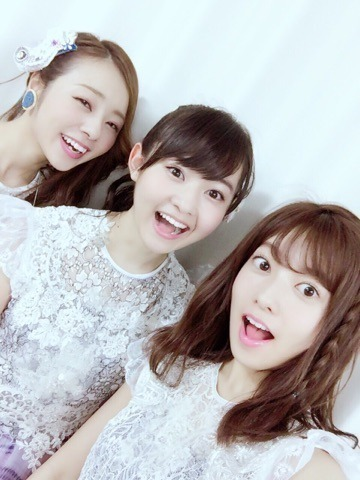
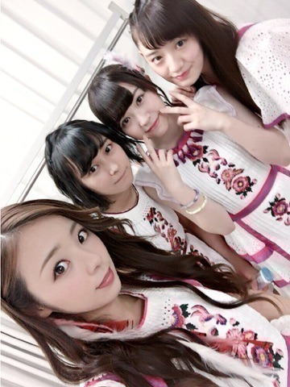
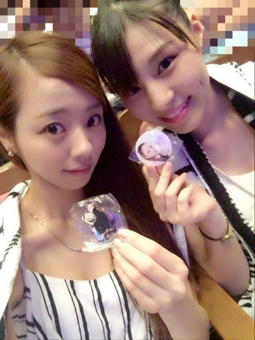

| 2016/09 02 Fri | 川村真洋 神宮でも1234GOろってぃー！ばっちり聞こえたよ。♡ |
こんにちわ♡
川村まひろだよ！
今回のblogは内容沢山になりそうだから極力まとめる気は持ちながらかくね。笑
後，モザイクしてた写真をモザイク解除して載せるね♫

先ずは，神宮live3日間おつかれさまだね♡
今年の夏のliveは自分と沢山戦ったな... そして成長させてくれた．
２９日には和田まあや、をキーボードとして加入し、新しい乃木團が誕生しました！ まあやは最初，不安やプレッシャーもあったと思うけど，そんなの感じない位に毎日笑顔でバンド練習にきてくれてたよ♡
とゆうかねぇ，あの指は反則．まあやの指長すぎ！！美しい！ キーボード弾くために生まれてきたと言っても過言ではないよ(*^^*)笑
そして，そんな新しくなった乃木團で新曲「失恋したら、顔を洗え！」を披露しました！
ボーカル2人の声もバッチリはまってるし，ちょっとヤンチャな感じが私も大好きです！
でも... 私の1番の山場は、、
乃木團のovertureとしてPrinceの『Purple Rain"』（パープルレイン）と言う曲を弾くことでした♫♫ 私達と同じ紫がイメージカラーと言う共通点があったりで...後とにかくこの曲はかっこいいので...
最初，私のギターソロからスタートするのですが... 最高に気持ちよかったです。。。
一気にvolumeをフル回転させて，爆音にして音をはおらせました。 それがかっこいいんです(T . T) 改めて『ギターってかっこいいな。』って感じました．
雨の中，あんなでっかな舞台でギターソロを弾く日が来るなんて，思ってもなかった 笑
まさか，歌の前にギターだったよ。♡笑
本当に感謝でしかありません、、
因みになんですが，パープルレインを弾く事を知ったのは７月２３日，私の誕生日の日です。 どうやからこれが私の21歳の誕生日プレゼントだったよう(*^^*) 大阪城でのliveを終えた後でした。

そしてもう１つ新しい事にチャレンジしました♡笑 これは本当に急だったんですが、、
私とさゆりんで渋谷ブルースを弾きました♫
何と楽譜を見，ちゃんと弾いたのは3日前♡
さゆりんがギターを練習してたのも全然知らなかった(^ ^)
さゆりんと『なにわコンビや～♡』ってゆうて楽しんでました(^ ^) 時間ある時に『なにわブルース』って曲つくってみよかな．笑
キャプテンが復帰したのも本当に安心したし，よかった。。 れいか舞台も決まってるし，本当に応援してるよ！！！
ぁ、これ「シークレットグラフィティ」の衣装。
この衣装も綺麗ね。
ぁーーー‼︎ とりあえず私はけん玉も極めなくちゃ！笑 やることあり過ぎっ、、乃木坂工事中みたかなー⁉︎
最近は常に持ち歩いてます 笑
はい、昨日、安室奈美恵さんのlive行ってきました． やばいです♡ やっぱ安室ちゃんが大好きです．

またね♡